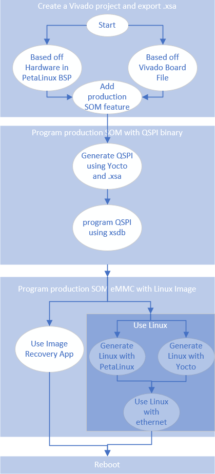

QSPI to eMMC boot for Production SOM¶
Introduction¶
The production SOM has an eMMC device populated, whereas the Starter Kit SOMs do not. Therefore, instead of Starter Kit’s QSPI->SD two stage boot process, developer can do a QSPI -> eMMC two stage process on the production SOM. This page gives an example of how to boot from QSPI -> eMMC for a K26 production SOM that is mounted on a KV260 or KR260 carrier card. However, it will also apply for a K24 production SOM (I grade or C grade) on a KD240 carrier card. Note that removal of the SOM from an AMD produced Starter Kit voids its warranty. This workflow is only intended to provide an example for customers creating their own carrier card design and wanting to make use of a similar two-stage boot methodology.
User can also use the traditional monolithic boot (from eMMC) for production SOMs by using eMMC boot mode and placing boot files in eMMC. This method is not covered by this document and also requires user to set the BOOT_MODE pins to eMMC on their production carrier card.
This tutorial is targeted for 2022.2 releases and tool chains.
Prerequisite¶
Have finished Getting Started with Kria SOM KV260 or KR260or KD240
Have read bootfw overview and its associated contents
Vivado or Vivado Lab installed on host computer
have gone through Yocto flow on host computer
PetaLinux installed on host computer (optional)
Steps¶
There are many different ways to get a production SOM to boot from QSPI to eMMC. The following steps have been verified with Kria SOM:
Create Vivado project and export .xsa file with Production SOM + Carrier Card peripheral support
Program production SOM with a QSPI binary using XSDB/XSCT and u-boot
Program production SOM eMMC with a Linux image, there are 2 ways to do this:
2.A Program the production SOM eMMC with Image Recovery App (does not support Ubuntu)
2.B.a [Boot Linux through SD](#2ba-boot-linux-through-sd) 2.B.b [Write to eMMC in Linux](#2bb-write-to-emmc-in-linux)
A graphical representation of the flow to help guide through the many options of doing each step:

0. Export .XSA file with Production SOM and Carrier Card Peripheral Support¶
We need to first create a Vivado project that has both Production SOM features (such as eMMC support for K24c/K24i and K26, and just for K24i - DDR ECC enablement) and carrier card peripheral features.This will allow us to later generate QSPI boot images or wic images with features from both, enabling accessing eMMC and Ethernet at the same time. The easiest way is to start from a Starter Kit SOM, as that has all the CC peripheral support, and we just need to enable eMMC, and in the case of K24i, DDR ECC.
Getting the base Starter Kit Vivado design¶
The base hardware project can be obtained either through PetaLinux or through Vivado board files.
PetaLinux¶
Download the Starter Kit BSP (KV260/KR260 etc) pointed to from the Wiki page. Extract the BSP. We will use KR260 2022.2 BSP as an example here:
```shell
petalinux-create -t project -s xilinx-kr260-starterkit-v2022.2-10141622.bsp
cd xilinx-kr260-starterkit-2022.2/
```
Use Vivado and open hardware/xilinx-kr260-starterkit-2022.2/kr260_starter_kit.xpr in the folder.
Board Files¶
Alternatively, follow instructions in Generate Vivado Project from Board Files to generate a base hardware project from board files.
Add Production SOM only Features¶
Click on IP INTEGRATOR -> Open Block Design, and double click on ZYNQ UltraSCALE+ PS block to open the configuration wizard for the PS.
In the configuration wizard, go to I/O Configuration -> Low Speed -> Memory Interfaces -> SD, and check SD0, and match the configuration of SD 0 to that of the snippet below:
Then click on OKAY, save the project, and IP_ITEGRATOR -> Generate Block Design. After that is finished, click on File -> Export -> Export Hardware, leave the default settings, and choose a xsa file name such as kr260_starter_kit_emmc8bit, and click next until finish. This would generate an kr260_starter_kit_emmc8bit.xsa file.
Note that if you are using a K24i - you will need to also enable the DDR ECC feature - as that is not enabled on K24 Production SOM or K24c.
1. Program Production SOM with QSPI binary¶
Unlike the Starter Kit SOM, the production SOM is shipped without QSPI pre-populated. A developer must first program QSPI with the appropriate boot firmware so that SOM will boot to U-Boot via the QSPI contents and then hand off to the Linux OS image in eMMC. The full QSPI binary for Starter Kit SOM is not released, however, each components can be generated as outlined in bootfw overview and its pages. As a reference and an example for this guide, developer need to:
1. import the .xsa generated in [previous step](#0-export-xsa-file-with-production-som-and-carrier-card-peripheral-support)
2. use [Yocto support on Kria](https://xilinx.github.io/kria-apps-docs/yocto.html) combined with [importing new .xsa to Yocto](../../../yocto/source/docs/yocto_kria_support.md#importing-a-new-xsa-file)
3. update the dtb file to include CC peripherals
to generate a QSPI binary that supports production SOM + CC peripheral. Below are the commands expected (after repo setup, using 2023.2 as an example here):
``` bash
#<MACHINE name> needs to be production som build - k26-sm, or k24i-sm, or k24c-sm
repo init -u https://github.com/Xilinx/yocto-manifests.git -b rel-v2023.2
repo sync
repo start rel-v2023.2 --all
source setupsdk
#modify sources/meta-kria/conf/machine/<MACHINE name>.conf with the following:
HDF_BASE = "file://"
HDF_PATH = "/path/to/XSA/file.xsa"
UBOOT_DT_FILES = "zynqmp-sck-<cc name>-g-rev<rev>.dts"
#e.g. zynqmp-sck-kd-g-revA.dtb or zynqmp-sck-kr-g-revB.dtb or zynqmp-sck-kv-g-revB.dtb; you can find the dtb intended for each CC card by this command:
# grep sources/meta-kria/conf/machine/k2*-smk-k*.conf UBOOT_DTFILE_PREFIX
#modify sources/meta-kria/recipes-bsp/bootbin/xilinx-bootbin_1.0.bbappend with the following:
BIF_PARTITION_IMAGE[u-boot-xlnx-fit-blob] = "${RECIPE_SYSROOT}/boot/devicetree/SMK-zynqmp-sck-<cc name>-g-rev<rev>.dtb" # e.g. SMK-zynqmp-sck-kd-g-revA.dtb or SMK-zynqmp-sck-kr-g-revB.dtb or SMK-zynqmp-sck-kv-g-revB.dtb
MACHINE=<MACHINE name> bitbake kria-qspi
```
Once you have a QSPI binary .bin file in $TMPDIR/deploy/images/<MACHINE name>, it is time to program it to the board. Mount the Kria production SOM onto a carrier card, connect it to a host computer using micro-usb cable or a AMD Platform cable. Leave SD card slot empty and connect to power.
To program the QSPI using XSDB/XSCT, download boot.tcl file and put them in a <working_folder/> along with <QSPI_image>.bin, bl31.elf pmufw.elf system.dtb u-boot.elf zynqmp_fsbl.elf found in $TMPDIR/deploy/images/<MACHINE name> from previous step.
Connect the serial port of carrier card with a uart listener so we can work in u-boot. Power on the board.
In xsdb/xsct, cd to <working_folder/> and source boot.tcl:
```shell
source boot.tcl
```
This will boot u-boot on the board. In the uart listener there should be print outs from u-boot. Press “enter” on uart listener to be at u-boot prompt, go back to xsdb and copy the QSPI image to DDR:
```shell
dow -force -data <QSPI image>.bin <ddr address>
```
example:
```shell
dow -force -data <QSPI image>.bin 0x80000
```
In u-boot, write the QSPI image in DDR to QSPI:
``` shell
ZynqMP> sf probe 0x0 0x0 0x0
ZynqMP> sf erase <offset address on flash> <greater than the size qspi bin>
ZynqMP> sf write <ddr address> <offset address on flash> <greater than the size qspi bin>
```
example:
``` shell
ZynqMP> sf probe 0x0 0x0 0x0
ZynqMP> sf erase 0x0 0x3000000
ZynqMP> sf write 0x80000 0x0 0x3000000
```
Close XSDB - leaving it open/connected may interfere with ZynqMPSoC’s operation.
Now QSPI is programmed with an image that contains boot.bin files and image recovery app. They will be used in the following section.
2. Program Production SOM eMMC with Linux Image¶
There are two ways to program the eMMC - using image recovery application or using Linux.
2A Program Production SOM eMMC with Image Recovery App¶
The Image recovery tool has an option to upload an image file to eMMC on a production SOM. For details on set-up and use of the Recovery Tool, see Boot Image Recovery Tool on kria SOM Wiki.
The recovery tool currently only support .wic image upload and has a limit of 4GB upload file size.
Yocto generated image are around 2GB and will be able to be uploaded to eMMC via recovery tool directly. Refer to Yocto Kria support page to generate a wic image for your production SOM.
PetaLinux generated image are around 8GB by default, so we will need to shrink it down. In this example we will limit the wic image targeted to eMMC to 2GB, using 0.5G for the boot partition and 1.5G for rootfs. Update the build/rootfs.wks in PetaLinux work folder before generating the wic image:
```shell
# in 2023.1 and older, need to use --ondisk mmcblk0 to target to emmc
part /boot --source bootimg-partition --ondisk mmcblk0 --fstype=vfat --label boot --active --align 4 --fixed-size 500M
part / --source rootfs --ondisk mmcblk0 --fstype=ext4 --label root --align 4 --fixed-size 1500M
# in 2023.2 and later, --use-label allows wic to be in either emmc or sd
part /boot --source bootimg-partition --use-label --fstype=vfat --label boot --active --align 4 --fixed-size 2G
part / --source rootfs --use-label --fstype=ext4 --label root --align 4 --fixed-size 4G
```
Note that after booting, use re-size tool to expand rootfs.
Then generate the .wic image with the .wks file and targeting running out of eMMC (mmcblk0):
```shell
petalinux-package --wic --bootfiles "ramdisk.cpio.gz.u-boot boot.scr Image system.dtb" --wks build/rootfs.wks
```
The wic image can now be uploaded through Image Recovery app.
2B Program Production SOM eMMC with Linux Image using Linux¶
To write to eMMC from Linux, we first need to boot Linux that has eMMC awareness and ethernet capabilities. This is because the Linux images can be bigger than DDR space. Therefore, traditional eMMC programming through xsdb and ddr will not work in this case. We need to boot to a Linux image from SD, then transfer the final image file directly from host computer to eMMC on the Starter Kit through the network.
Please also note that the Starter Kit PetaLinux images (.wic files) and Ubuntu image (.img file) released do not have emmc support and are targeted to boot from SD card and not eMMC. The images targeted to eMMC will need to be re-generated with the appropriate hardware (eMMC enabled). In 2023.1 and older, the wic images also need to be generated with disk-name "mmcblk0" in petalinux-package to target it to boot out of eMMC (in 2023.2 and newer, .wks file has --use-label which allows the wic image to work out of eMMC or SD card). The production SOM (e.g. Production K26 SOM) BSP’s prebuilt wic image, however, has emmc support and are targeted to boot out of eMMC. It can be used as an example image to be programmed into the eMMC.
2.B.a Boot Linux through SD¶
We need to boot a Linux with eMMC and Ethernet support from SD card. The released K26 production SOM BSP by default has eMMC support but no awareness of any Starter Kit peripherals including Ethernet. The Starter Kit BSPs has support for Ethernet, but no eMMC support as the default Starter Kit SOM do not have eMMC. Therefore, we will need to create our own Linux wic image that has both Ethernet and eMMC support. We have already created a .xsa file with support for both in step 0, we will leverage the .xsa created there to generate a new .eic image. This can be done in either Yocto oe PetaLinux. Follow eitherGenerate with new .xsa in Yocto or Generate with new .xsa in PetaLinux:
Generate with new .xsa in Yocto¶
Refer to Importing a New XSA File for steps to import new .xsa file. You have already done most of the steps in QSPI generation ins step 1, you just need the following command to also generate a new .wic image:
```bash
MACHINE=<MACHINE name> bitbake kria-image-full-cmdline
```
Now you have a wic image in $yocto_project/build/tmp/deploy/images/<machine name>/ to program into SD card.
Generate with new .xsa in PetaLinux¶
This section shows how to import the new hardware configuration into the PetaLinux project. For more details review UG1144.
Here are the example commands to import the new .xsa and regenerate wic image:
```shell
petalinux-config --get-hw-description hardware/xilinx-kr260-starterkit-2022.2/kr260_starter_kit_emmc8bit.xsa #this will bring up a config GUI - just exit and let it configure
petalinux-build
petalinux-package --boot --u-boot --force
#for KV260 on 2023.1 and earlier, package to SD on mmcblk1:
petalinux-package --wic --images-dir images/linux/ --bootfiles "ramdisk.cpio.gz.u-boot,boot.scr,Image,system.dtb,system-zynqmp-sck-kv-g-revB.dtb" --disk-name "mmcblk1"
#for KV260 on 2023.2 and later, --disk-name is not supported, and .wks file has --use-label to allow booting out of eMMC or SD
petalinux-package --wic --images-dir images/linux/ --bootfiles "ramdisk.cpio.gz.u-boot,boot.scr,Image,system.dtb,system-zynqmp-sck-kv-g-revB.dtb"
#for KR260 on 2023.1 and earlier, package to SD on sda/usb:
petalinux-package --wic --images-dir images/linux/ --bootfiles "ramdisk.cpio.gz.u-boot,boot.scr,Image,system.dtb,system-zynqmp-sck-kr-g-revB.dtb" --disk-name "sda"
#for KR260 on 2023.2 and later, --disk-name is not supported, and .wks file has --use-label to allow booting out of eMMC or SD
petalinux-package --wic --images-dir images/linux/ --bootfiles "ramdisk.cpio.gz.u-boot,boot.scr,Image,system.dtb,system-zynqmp-sck-kr-g-revB.dtb"
#for KD240, supports starts on 2023.2, .wks file has --use-label to allow booting out of eMMC or SD
petalinux-package --wic --images-dir images/linux/ --bootfiles "ramdisk.cpio.gz.u-boot,boot.scr,Image,system.dtb,system-zynqmp-sck-kd-g-revA.dtb"
```
Now you have a wic image in $petalinux_project/images/linux/ to program into SD card.
Boot Linux with eMMC and Peripheral Support¶
Plug the SD card into SD slot and power on.
If doing this for the second time (e.g. if eMMC already have a Linux image), both u-boot and Linux will choose to boot to eMMC prior to try to boot to SD. In order to boot to SD instead of eMMC, press “enter” when u-boot prompts to stop autoboot. In u-boot, first wipe the eMMC, and then use commands to boot to PetaLinux image in sd:
Example commands to wipe eMMC, it may vary depending on what was previously in eMMC:
```bash
ZynqMP> mmc part #check existing partition map
ZynqMP> mmc partconf 0 1 0 0 # set boot partition to user partition to allow writes/erase
ZynqMP> mmc dev 0 0 #switch to the user partition (should be partition 1 according to outputs from previous command)
ZynqMP> mmc read 0x80000 0x7fffffff 1 # read a large chunk so it display the max size as below:
# MMC read: dev # 0, block # 2147483647, count 1 ... MMC: block number 0x80000000 exceeds max(0x1da4000)
# 0 blocks read: ERROR
ZynqMP> mmc erase 0 0x1da4000 # or whatever max output from previous command
ZynqMP> mmc dev 0 1 #switch to the boot partition (should be partition 1 according to outputs from previous command)
ZynqMP> mmc read 0x80000 0x7fffffff 1 # read a large chunk so it display the max size
ZynqMP> mmc erase 0 <max size> #erase the partition
ZynqMP> mmc dev 0 2 #switch to the rootfs partition (should be partition 2 according to outputs from previous command)
ZynqMP> mmc read 0x80000 0x7fffffff 1 # read a large chunk so it display the max size
ZynqMP> mmc erase 0 <max size> #erase the partition
```
Example commands to force u-boot boot out of SD (alternatively you can just power cycle again and let u-boot automatically pick SD card to boot from, since eMMC has been wiped clean):
For KV260, SD is mapped to mmc1:
``` bash
ZynqMP> setenv boot_targets mmc1
ZynqMP> run bootcmd_mmc1
```
For KR260, SD is behind the USB hub:
``` bash
ZynqMP> setenv boot_targets usb0
ZynqMP> run bootcmd_usb0
```
2.B.b Write to eMMC in Linux¶
Once booted to Linux, you should be able to see /dev/mmcblk0 - the eMMC partition. Note on KV260 starter kit, SD is mapped to SD1, while on KR260, SD is mapped to USB. So on KV260 there is also /dev/mmcblk1 - the SD partition. To double check, you can use this command:
```shell
cat /sys/class/mmc_host/mmc0/*/uevent
cat /sys/class/mmc_host/mmc1/*/uevent
```
if MMC_TYPE=MMC, it is an eMMC device, if MMC_TYPE=SD, it is a SD device.
Next, transfer the image file targeted for eMMC over using your favorite method (such as scp, nfs, copying over SD card etc…).
Using scp:
on target:
```shell
sudo chmod 666 /dev/mmcblk0 #add write permission for user
ifconfig #check ip address
```
on host computer, copy the image for eMMC over (a .img file for Ubuntu or .wic file for PetaLinux, built to boot out of eMMC)
```
scp <image> petalinux@<ip address>:/dev/mmcblk0
```
using nfsroot:
On host computer, where <image> is a .img file for Ubuntu or .wic file for PetaLinux, built to boot out of eMMC:
```shell
nfsroot3 <path to be mounted where image is present>
```
On target:
```shell
mkdir /nfsroot
mount -t nfs -o nolock,proto=tcp,port=2049 10.10.70.101:/exports/root /nfsroot
#Use DD command to flash image
dd if=/nfsroot/<image> of=/dev/mmcblk0
```
3. Reboot in QSPI mode¶
Next, boot the board in QSPI - simply power cycle and it will boot from QSPI to eMMC.
Refer to u-boot handoff “Prioritized Boot Order” section, on 22.1 or later, u-boot will prioritize handling off from QSPI to eMMC on production SOM, if images are available.
License¶
Licensed under the Apache License, Version 2.0 (the “License”); you may not use this file except in compliance with the License.
You may obtain a copy of the License at http://www.apache.org/licenses/LICENSE-2.0
Unless required by applicable law or agreed to in writing, software distributed under the License is distributed on an “AS IS” BASIS, WITHOUT WARRANTIES OR CONDITIONS OF ANY KIND, either express or implied. See the License for the specific language governing permissions and limitations under the License.
Copyright© 2023 Advanced Micro Devices, Inc